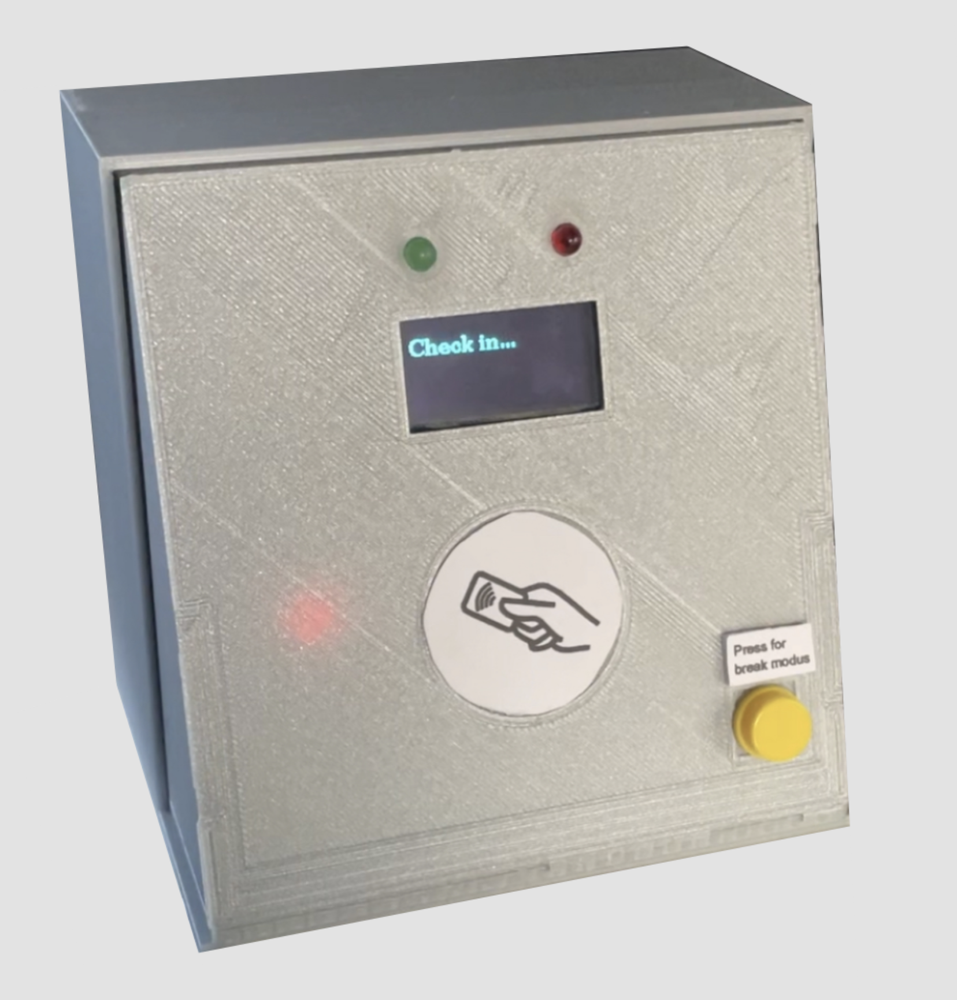
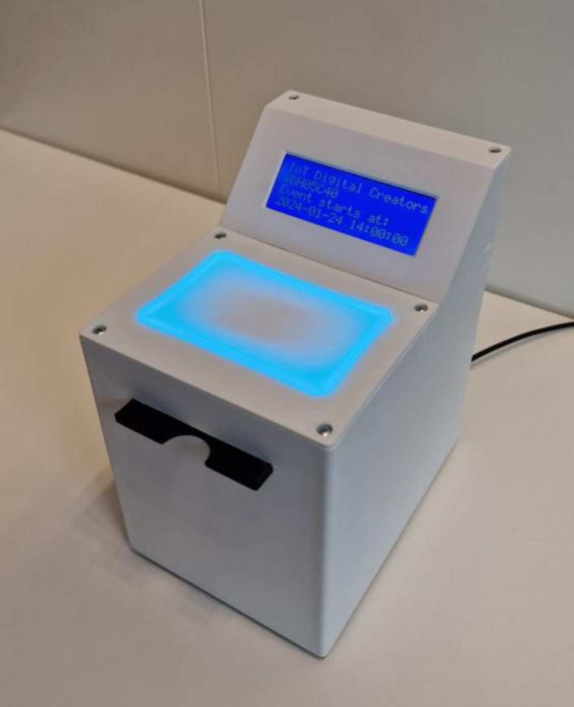
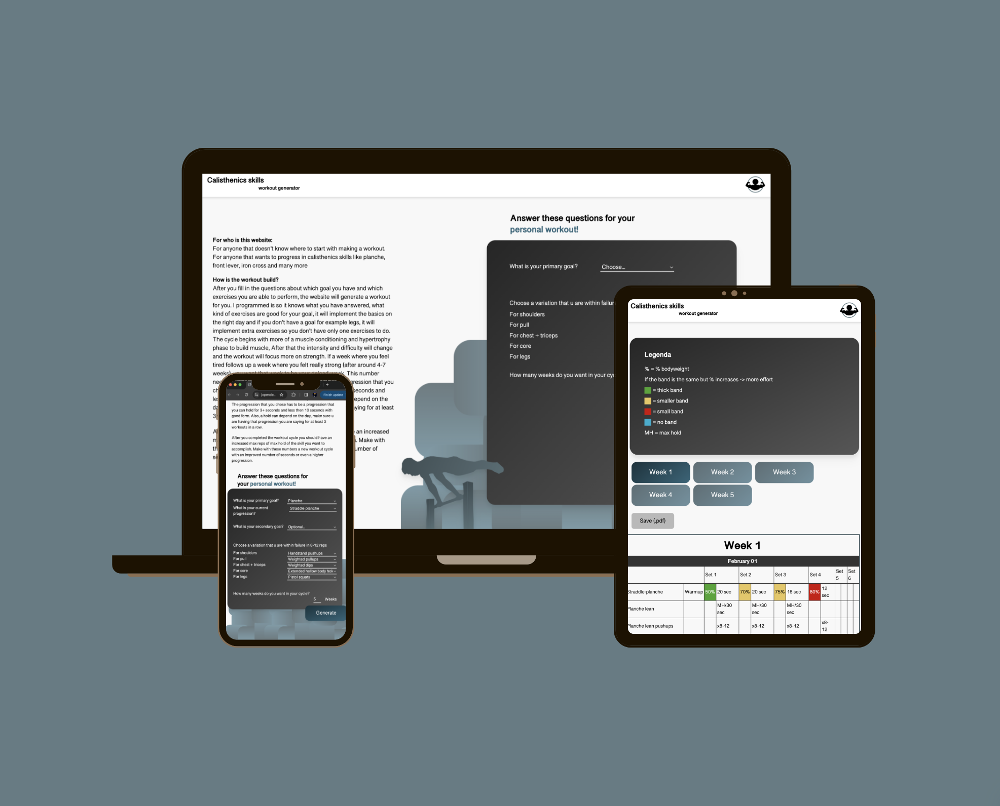

Portfolio van Jop Molenaar
Projects
-
IoT check-in system
I made a check in device at my minor IoT
 -
IoT check-in system for the HvA (Team)
We made an IoT check-in system with web environment for a real client from the hva.
 -
Calisthenics workout generator
I made a workout generator for calisthenics based on your goals and level.

About me
Skills
- HTML
- CSS/SCSS
- Javascript
- NodeJS
- PHP and SQL
- c++
Soft skills
- Discipline
- stress-resistant
- Driven
- Trustworthy
- Positive
Who am I?
Hi, I am Jop Molenaar, 19 years old and I'm studying Communication and Multi-Media Design. I am interested in full stack development, IoT and UX. Besides that, I am a very disciplined, nice guy that has a great passion for calisthenics. ...